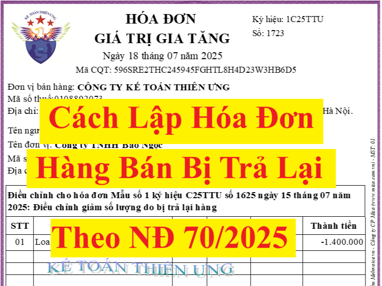
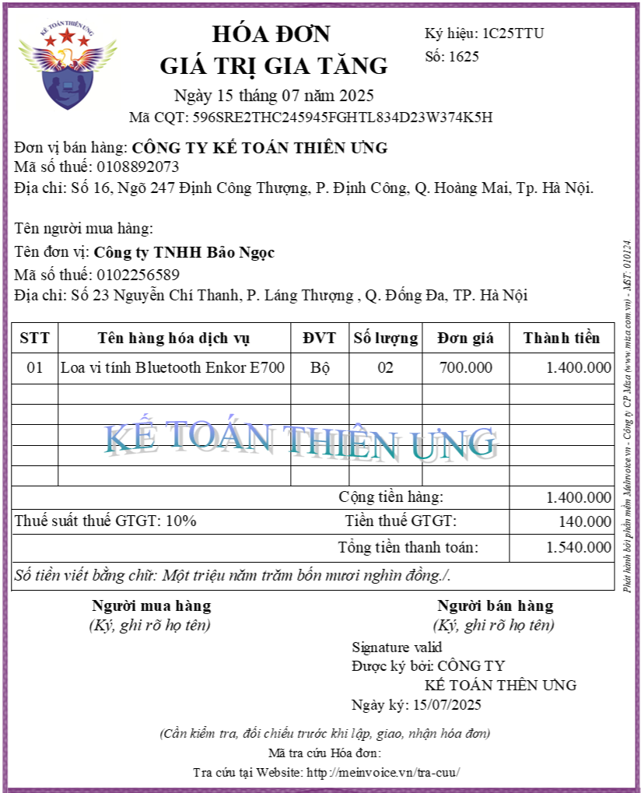
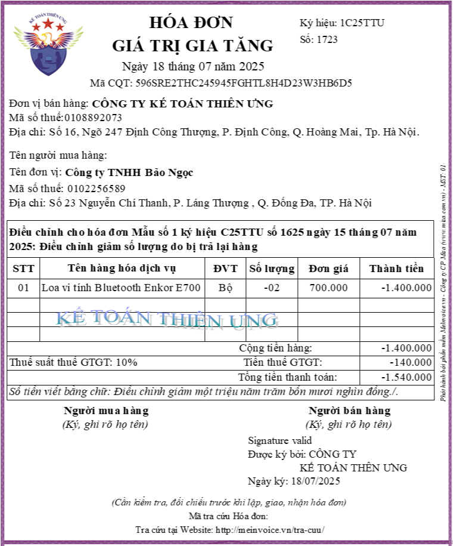
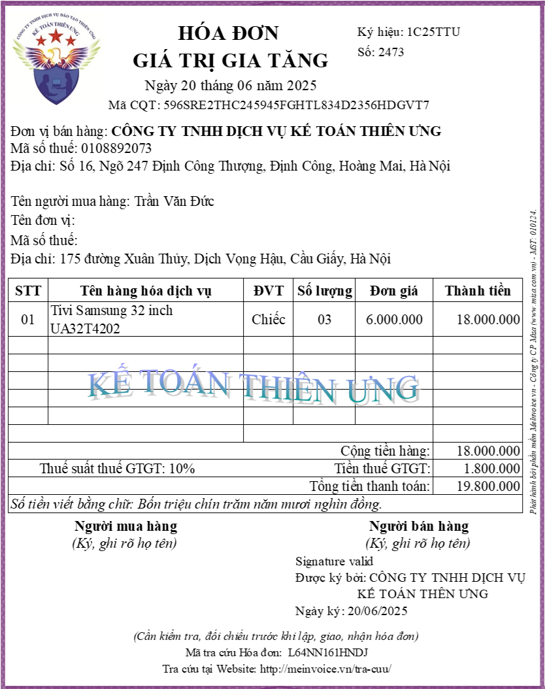
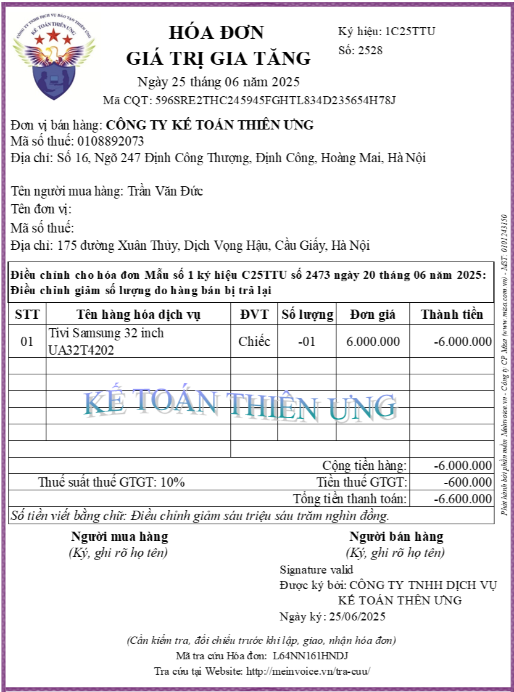
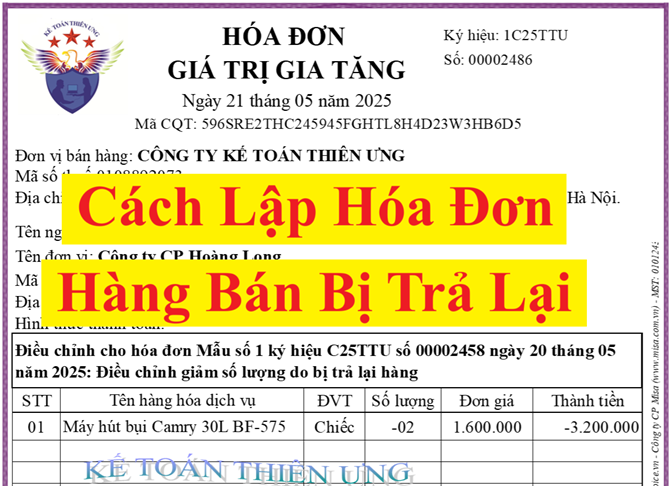
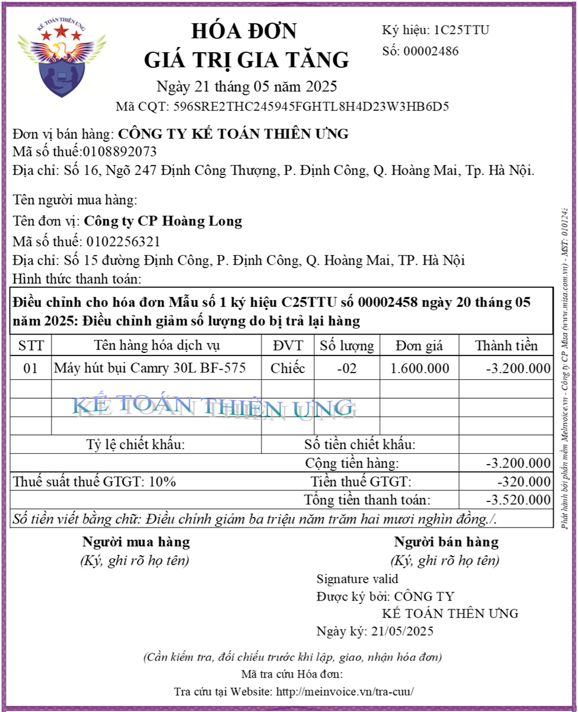
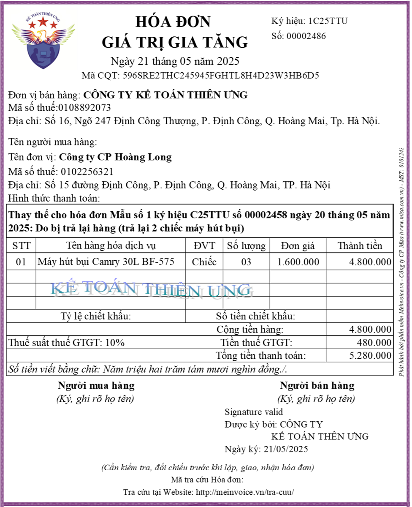

Hướng dẫn cách xử lý hóa đơn khi phát sinh hàng bán bị trả lại theo quy định mới nhất năm 2025 tại Nghị định 70/2025/NĐ-CP và thông tư 32/2025/TT-BTC.
Hàng bán bị trả lại là số lượng hàng hóa được xác định là đã bán (Người bán đã giao hàng, đã xuất hóa đơn giao cho người mua) nhưng bị khách hàng trả lại do vi phạm cam kết, vi phạm hợp đồng kinh tế, hàng bị kém, mất phẩm chất, không đúng chủng loại, quy cách.
+ Trước ngày 01/06/2025: Thực hiện theo quy định tại: tại khoản 1 điều 4 của Nghị định 123/2020/NĐ-CP và thông tư 78/2021/TT-BTC
+ Từ ngày 01/06/2025 trở đi: Thực hiện theo quy định tại: Nghị định 70/2025/NĐ-CP sửa đổi Nghị định 123/2020/NĐ-CP quy định về hóa đơn, chứng từ. (Ban hành ngày 20/3/2025, hiệu lực thi hành từ ngày 01/6/2025)
+ Từ ngày 01/06/2025 trở đi: Thực hiện theo quy định tại: Nghị định 70/2025/NĐ-CP sửa đổi Nghị định 123/2020/NĐ-CP quy định về hóa đơn, chứng từ. (Ban hành ngày 20/3/2025, hiệu lực thi hành từ ngày 01/6/2025)
Chi tiết về cách xử lý hóa đơn điện tử trong trường hợp trả lại hàng hoá, dịch vụ theo từng giai đoạn như sau:
I. Cách xử lý hàng bán bị trả lại theo Nghị định 70/2025/NĐ-CP (áp dụng cho giai đoạn từ ngày 01/06/2025 trở đi)
Căn cứ vào điểm a Khoản 3 Điều 1 Nghị định 70/2025/NĐ-CP sửa đổi, bổ sung khoản 1 Điều 4 của Nghị định số 123/2020/NĐ-CP thì:
1. Khi bán hàng hóa, cung cấp dịch vụ, người bán phải lập hóa đơn để giao cho người mua (bao gồm cả các trường hợp hàng hóa, dịch vụ dùng để khuyến mại, quảng cáo, hàng mẫu; hàng hóa, dịch vụ dùng để cho, biếu, tặng, trao đổi, trả thay lương cho người lao động và tiêu dùng nội bộ (trừ hàng hóa luân chuyển nội bộ để tiếp tục quá trình sản xuất); xuất hàng hóa dưới các hình thức cho vay, cho mượn hoặc hoàn trả hàng hóa) và các trường hợp lập hóa đơn theo quy định tại Điều 19 Nghị định này. Hóa đơn phải ghi đầy đủ nội dung theo quy định tại Điều 10 Nghị định này. Trường hợp sử dụng hóa đơn điện tử phải theo định dạng chuẩn dữ liệu của cơ quan thuế theo quy định tại Điều 12 Nghị định này.
Căn cứ vào Khoản 13 Điều 1 Nghị định 70/2025/NĐ-CP Sửa đổi tên Điều 19 và sửa đổi, bổ sung Điều 19 của Nghị định số 123/2020/NĐ-CP thì:

Điều 19. Thay thế, điều chỉnh hóa đơn điện tử
4. Hóa đơn để điều chỉnh hóa đơn điện tử đã lập trong một số trường hợp như sau:
c) Xử lý hóa đơn điện tử trong trường hợp trả lại hàng hoá, dịch vụ:
4. Hóa đơn để điều chỉnh hóa đơn điện tử đã lập trong một số trường hợp như sau:
c) Xử lý hóa đơn điện tử trong trường hợp trả lại hàng hoá, dịch vụ:
c.1) Trường hợp trả lại hàng hóa: Trường hợp người mua trả lại toàn bộ hoặc một phần hàng hóa (bao gồm cả trường hợp đổi hàng làm thay đổi giá trị của hàng hóa đã mua) thì người bán lập hóa đơn điều chỉnh, trừ trường hợp các bên có thỏa thuận về việc người mua lập hóa đơn khi trả lại hàng hóa thì người mua lập hóa đơn điện tử giao cho người bán; người bán, người mua thực hiện nghĩa vụ thuế theo quy định khi bán hàng hóa.
c.2) Trường hợp hàng hoá là tài sản thuộc diện phải đăng ký quyền sử dụng, quyền sở hữu theo quy định của pháp luật và tài sản đã được đăng ký theo tên người mua thì khi trả lại hàng hoá đảm bảo phù hợp với pháp luật liên quan, nếu người mua là đối tượng sử dụng hoá đơn điện tử thì người mua thực hiện lập hoá đơn trả lại hàng cho người bán.
c.3) Đối với trường hợp hoàn phí, giảm phí, giảm hoa hồng môi giới bảo hiểm và các khoản chi để giảm thu khác theo quy định của pháp luật kinh doanh bảo hiểm: Căn cứ vào hóa đơn đã lập và biên bản hoặc thỏa thuận bằng văn bản ghi rõ số tiền phí bảo hiểm được hoàn, giảm (không bao gồm thuế giá trị gia tăng), số tiền thuế giá trị gia tăng theo hóa đơn thu phí bảo hiểm mà doanh nghiệp bảo hiểm đã thu (số ký hiệu, ngày, tháng của hóa đơn), lý do hoàn, giảm phí bảo hiểm thì người bán lập hóa đơn điều chỉnh giao cho khách hàng tham gia bảo hiểm, không phân biệt đã chi tiền hay chưa chi tiền. Trên hóa đơn ghi rõ số tiền phí bảo hiểm hoàn, giảm, lý do hoàn, giảm. Biên bản này được lưu giữ cùng với hóa đơn thu phí bảo hiểm tại doanh nghiệp và xuất trình khi có yêu cầu.
Đối với các trường hợp quy định tại điểm c.1, điểm c.2, điểm c.3, người bán, người mua phải có đầy đủ hồ sơ, chứng từ liên quan đến việc trả lại hàng hoá, dịch vụ và phải xuất trình khi được yêu cầu.
c.4) Trường hợp người bán đã lập hóa đơn khi thu tiền trước khi cung cấp dịch vụ hoặc lập hóa đơn thu tiền đối với hoạt động kinh doanh bất động sản, xây dựng cơ sở hạ tầng, xây dựng nhà để bán, nhà chuyển nhượng sau đó phát sinh việc huỷ hoặc chấm dứt giao dịch và hủy một phần việc cung cấp dịch vụ thì người bán thực hiện điều chỉnh hóa đơn điện tử đã lập theo quy định tại điểm b.1 khoản 1 Điều này.
Vậy là theo quy định trên thì: Bắt đầu kể từ ngày 01/06/2025 trở đi, kể từ khi Nghị định 70/2025/NĐ-CP có hiệu lực thì đối với trường hợp trả lại hàng hóa thì sẽ xử lý như sau:
Khi mua bán hàng hoá => Người bán đã bàn giao hàng hóa và đã xuất hoá đơn => Người mua đã nhận hàng nhưng sau đó người mua phát hiện hàng hoá không đúng quy cách, chất lượng phải trả lại toàn bộ hay một phần hàng hoá thì thực hiện như sau:
+ Bước 1: Lập biên bản thỏa thuận trả lại hàng: ghi rõ lý do và mặt hàng trả lại
(Lưu ý: Người bán, người mua phải có đầy đủ hồ sơ, chứng từ liên quan đến việc trả lại hàng và phải xuất trình khi được yêu cầu)
Để tải mẫu biên bản thỏa thuận trả lại hàng về tham khảo thì các bạn xem tại đây:
Mẫu biên bản trả lại hàng theo Nghị định 70 2025
+ Bước 2: Người bán sẽ lập hóa đơn điều chỉnh khi nhận lại hàng
(Lưu ý: trường hợp các bên có thỏa thuận về việc người mua lập hóa đơn khi trả lại hàng hóa thì người mua lập hóa đơn điện tử giao cho người bán)
(Vậy là: khi trả lại hàng thì bên bán hay bên mua lập hóa đơn đều được (do 2 bên thỏa thuận))
Sau đây, Công ty đào tạo Kế Toán Diệu Tâm sẽ hướng dẫn các bạn cách lập hóa đơn hàng bán bị trả lại theo Nghị định 70/2025/NĐ-CP bằng những tình huống cụ thể:
Tình huống số 1: Trả lại toàn bộ hàng hóa và bên bán lập hóa đơn khi nhận lại hàng
- Ngày 15/07/2025, Công ty Kế Toán Diệu Tâm bán hàng cho công ty Bảo Ngọc
Công Ty Tư Vấn Minh Phúc đã giao hàng và đã xuất hóa đơn như sau:

Đến ngày 18/07/2025, Công ty Bảo Ngọc phát hiện ra: Cả 2 bộ loa đều bị rè tiếng
=> Công ty Bảo Ngọc yêu cầu trả lại cả 2 bộ loa không đảm bảo chất lượng này
=> Công ty Diệu Tâm đồng ý cho bên công ty Bảo Ngọc trả lại hàng
=> Hai bên thống nhất: trả lại hàng vào ngày 18/07/2025 và bên bán chịu trách nhiệm lập hóa đơn điều chỉnh khi nhận lại hàng
Các bước xử lý trả lại hàng hóa là 2 bộ loa này như sau:=> Công ty Diệu Tâm đồng ý cho bên công ty Bảo Ngọc trả lại hàng
=> Hai bên thống nhất: trả lại hàng vào ngày 18/07/2025 và bên bán chịu trách nhiệm lập hóa đơn điều chỉnh khi nhận lại hàng
Bước 1: Lập biên bản thỏa thuận trả lại hàng: ghi rõ lý do và mặt hàng trả lại
|
CỘNG HÒA XÃ HỘI CHỦ NGHĨA VIỆT NAM Độc lập – Tự do – Hạnh phúc ------------------
BIÊN BẢN THỎA THUẬN TRẢ LẠI HÀNG HÓA
(Số: 01/2025/BBTLH-TU-BN) Căn cứ vào Nghị định 70/2025/NĐ-CP Ngày 20/3/2025 của Chính phủ sửa đổi Nghị định 123/2020/NĐ-CP ngày 19/10/2020 quy định về hóa đơn, chứng từ. Hôm nay, ngày 18 tháng 07 năm 2025 hai bên chúng tôi gồm có: Đơn vị bán hàng: CÔNG TY TƯ VẤN MINH PHÚC
Mã số thuế : 0113579246
Địa chỉ: Số 24 Nguyễn Cảnh Dị, P. Đại Kim, Q. Hoàng Mai, Tp. Hà Nội. Đại diện: Bà Lê Ngọc Diệp Chức vụ: Giám đốc Đơn vị mua hàng: CÔNG TY TNHH BẢO NGỌC
Mã số thuế: 0118257463
Địa chỉ: Số 15 Trung Kính, P. Yên Hòa, Q. Cầu Giấy, TP. Hà Nội
Đại diện: Bà Nguyễn Bảo Ngọc Chức vụ: Giám đốc
Sau khi đã kiểm tra lại về chất lượng của mặt hàng Loa vi tính Bluetooth Enkor E700 đã bàn giao ngày 15/07/2025, theo hóa đơn số 1625, ký hiệu 1C25TTU thì chúng tôi xác nhận rằng: Cả 2 bộ loa đều bị rè tiếng Do đó, hai bên chúng tôi thống nhất: Bên mua sẽ trả lại cả 2 bộ loa không đảm bảo chất lượng này vào ngày 18/07/2025 Khi nhận lại hàng, bên bán sẽ xuất hóa đơn điều chỉnh Sau khi bàn giao hàng hóa thì bên mua được nhận lại toàn bộ số tiền đã thanh toán khi mua 2 bộ loa này tại ngày 15/07/2025 là 1.540.000đ Hai bên chịu trách nhiệm kê khai thuế theo đúng quy định tại Nghị định 70/2025/NĐ-CP Biên bản này được lập thành 02 bản, có giá trị pháp lý như nhau, mỗi bên giữ 01 bản
|
(Lưu ý: Người bán, người mua phải có đầy đủ hồ sơ, chứng từ liên quan đến việc trả lại hàng và phải xuất trình khi được yêu cầu)
Bước 2: Bên bán lập hóa đơn điều chỉnh như đã thỏa thuận
Khi nhận lại hàng thì bên bán sẽ lập hóa đơn điều chỉnh giảm số lượng hàng đã bán như sau:

(Đây là mẫu hóa đơn hàng bán bị trả lại do bên bán lập)
|
Công ty đào tạo Kế Toán Diệu Tâm mời các bạn tham khảo thêm: |
| Cách kê khai hàng bán trả lại |
Tình huống số 2: Trả lại 1 phần hàng hóa và bên bán lập hóa đơn khi nhận lại hàng
- Ngày 20/06/2025, Công ty Diệu Tâm bán hàng cho cá nhân là anh Trần Văn Đức => Đã bàn giao hàng hóa và xuất hóa đơn như sau:
Đến ngày 25/06/2025, anh Đức thông báo cho công ty Diệu Tâm về việc có 1 chiếc Tivi bị lỗi không lên hình
=> Công ty Diệu Tâm đã cử kỹ thuật đến nhà anh Đức để kiểm tra và khắc phục thì xác định: Tivi đã bị hỏng màn hình
=> Anh Đức đề nghị trả lại chiếc tivi bị lỗi này
Các bước xử lý trả lại 1 chiếc tivi này như sau:
Bước 1: Lập biên bản thỏa thuận trả lại hàng: ghi rõ lý do và mặt hàng trả lại
Hóa đơn bị trả lại hàng sẽ được lập như sau:
II. Cách xử lý hàng bán bị trả lại theo thông tư 78/2021/TT-BTC và nghị định 123/2020/NĐ-CP (áp dụng cho giai đoạn trước ngày 01/06/2025)- Ngày 20/06/2025, Công ty Diệu Tâm bán hàng cho cá nhân là anh Trần Văn Đức => Đã bàn giao hàng hóa và xuất hóa đơn như sau:

Đến ngày 25/06/2025, anh Đức thông báo cho công ty Diệu Tâm về việc có 1 chiếc Tivi bị lỗi không lên hình
=> Công ty Diệu Tâm đã cử kỹ thuật đến nhà anh Đức để kiểm tra và khắc phục thì xác định: Tivi đã bị hỏng màn hình
=> Anh Đức đề nghị trả lại chiếc tivi bị lỗi này
=> Công ty Diệu Tâm đồng ý cho Anh Đức trả lại hàng
=> Hai bên thống nhất: trả lại hàng vào ngày 25/06/2025
=> Hai bên thống nhất: trả lại hàng vào ngày 25/06/2025
Các bước xử lý trả lại 1 chiếc tivi này như sau:
Bước 1: Lập biên bản thỏa thuận trả lại hàng: ghi rõ lý do và mặt hàng trả lại
(Biên bản trả lại hàng các bạn lập tương tự như trường hợp 1 bên trên)
Bước 2: Bên bán lập hóa đơn điều chỉnh khi nhận lại hàng
(Vì đây là trường hợp người mua là cá nhân (không sử dụng hóa đơn (tức là không có hóa đơn để xuất trả lại hàng cho bên bán) nên đối với trường hợp này 2 bên không thể thỏa thuận là bên mua chịu trách nhiệm lập hóa đơn khi trả lại hàng được mà bên bán sẽ phải chịu trách nhiệm lập hóa đơn điều chỉnh khi nhận lại hàng)
Hóa đơn bị trả lại hàng sẽ được lập như sau:

1. Hàng bán bị trả lại có phải lập hóa đơn không?
Căn cứ khoản 1 Điều 4 Nghị định 123/2020/NĐ-CP thì:
Khi bán hàng hóa, cung cấp dịch vụ, người bán phải lập hóa đơn để giao cho người mua (bao gồm cả các trường hợp hàng hóa, dịch vụ dùng để khuyến mại, quảng cáo, hàng mẫu; hàng hóa, dịch vụ dùng để cho, biếu, tặng, trao đổi, trả thay lương cho người lao động và tiêu dùng nội bộ (trừ hàng hóa luân chuyển nội bộ để tiếp tục quá trình sản xuất); xuất hàng hóa dưới các hình thức cho vay, cho mượn hoặc hoàn trả hàng hóa) và phải ghi đầy đủ nội dung theo quy định tại Điều 10 Nghị định này, trường hợp sử dụng hóa đơn điện tử thì phải theo định dạng chuẩn dữ liệu của cơ quan thuế theo quy định tại Điều 12 Nghị định này.
Vậy là: Khi nhận lại hàng sẽ phải lập hóa đơn
2. Khi trả lại hàng thì bên nào sẽ phải lập hóa đơn? bên bán lập hay bên mua lập?
Theo hướng dẫn tại 1 vài các công văn như:
2. Khi trả lại hàng thì bên nào sẽ phải lập hóa đơn? bên bán lập hay bên mua lập?
Theo hướng dẫn tại 1 vài các công văn như:
+ Công văn 2121/TCT-CS ngày 29/5/2023 của Tổng cục Thuế
+ Công văn số 8999/CTTPHCM-TTHT ngày 19/07/2023 của Cục Thuế Tp Hồ Chí Minh
+ Công văn số 73896/CTHN-TTHT ngày 16/10/2023 của Cục Thuế TP. Hà Nội
+ Công văn số 4511/TCT-CS ngày 11/10/2023 của Tổng cục Thuế
thì:
+ Công văn số 8999/CTTPHCM-TTHT ngày 19/07/2023 của Cục Thuế Tp Hồ Chí Minh
+ Công văn số 73896/CTHN-TTHT ngày 16/10/2023 của Cục Thuế TP. Hà Nội
+ Công văn số 4511/TCT-CS ngày 11/10/2023 của Tổng cục Thuế
Trường hợp tổ chức, cá nhân mua hàng hoá, người bán đã xuất hoá đơn, người mua đã nhận hàng, nhưng sau đó người mua phát hiện hàng hoá không đúng quy cách, chất lượng phải trả lại toàn bộ hay một phần hàng hoá thì thực hiện như sau:
=> Khi nhận lại hàng hóa, Bên bán sẽ thực hiện lập hóa đơn
(Theo Công văn số 73896/CTHN-TTHT ngày 16/10/2023 của Cục Thuế TP. Hà Nội thì khi trả lại hàng bên mua sẽ không phải lập hóa đơn)
Vậy là: hiện nay khi doanh nghiệp đã sử dụng hóa đơn điện tử theo quy định tại thông tư 78/2021/TT-BTC và nghị định 123/2020/NĐ-CP thì Trường hợp người mua trả lại hàng sẽ không phân biệt người mua là tổ chức (tức là DN đó ah) hay cá nhân nữa => Mà cứ phát sinh hàng bán bị trả lại thì sẽ xử lý như sau:
Khi nhận lại hàng thì bên bán sẽ phải lập hóa đơn
3. Cách xuất hóa đơn hàng bán bị trả lại theo thông tư 78 và nghị định 123
Khi nhận lại hàng, bên bán có thể lựa chọn 1 trong 2 cách lập hóa đơn là: Lập hóa đơn điều chỉnh giảm số lượng cho số hàng bị trả lại hoặc lập hóa đơn thay thế cho hóa đơn đã lập khi bán hàng trước đóCụ thể:
+ Hóa đơn điều chỉnh giảm: để điều chỉnh giảm số lượng hàng đã bán trên hóa đơn đã xuất trước đó xuống => Trả lại bao nhiêu thì điều chỉnh giảm số lượng hàng bán xuống bấy nhiêu
+ Hóa đơn điều thay thế: để thay thế hóa đơn trước đó đã ghi theo số lượng xuất ra => giờ bị trả lại rồi => Thực tế còn bán với số lượng bao nhiêu thì ghi số lượng đó lên hóa đơn thay thế này
+ Hóa đơn điều thay thế: để thay thế hóa đơn trước đó đã ghi theo số lượng xuất ra => giờ bị trả lại rồi => Thực tế còn bán với số lượng bao nhiêu thì ghi số lượng đó lên hóa đơn thay thế này
(Nói chung về mặt tổng quan là các bạn sẽ xử lý hàng bán bị trả lại tương tự như trường hợp hóa đơn xuất sai số lượng => Trả lại hàng tức là giảm số lượng hàng đã bán xuống nên cần xuất hóa đơn điều chỉnh giảm hoặc dùng hóa đơn thay thế đều được)

+ Ngoài ra thì người bán và người mua có thỏa thuận ghi rõ hàng bán trả lại (Tức là 2 bên cần lập biên bản thỏa thuận trả lại hàng ghi rõ lý do và mặt hàng trả lại)
4. Mẫu biểu hồ sơ hàng bán bị trả lại
Tình huống:
+ Ngày 20/05/2025: Công Ty Tư Vấn Minh Phúc bán hàng cho công ty Cổ phần Hoàng Long
+/ Mặt hàng: Máy hút bụi Camry 30L BF-575
+/ Số lượng: 5 chiếc
=> Đã bàn giao ngày 20/05/2025 => Đã lập hóa đơn số 00002458, ký hiệu 1C25TTU
+ Đến ngày 21/05/2025: Bên mua phát hiện 2 chiếc máy hút bụi không đảm bảo chất lượng
=> Hai bên thống nhất: Trả lại 2 chiếc máy hút bụi không đảm bảo chất lượng này vào ngày 21/05/2025
4.1. Mẫu biên bản trả lại hàng|
CỘNG HÒA XÃ HỘI CHỦ NGHĨA VIỆT NAM
Độc lập – Tự do – Hạnh phúc ------------------ BIÊN BẢN TRẢ LẠI HÀNG HÓA (Số: 03/2025/TLH-TU)
Căn cứ Nghị định 123/2020/NĐ-CP ngày 19 tháng 10 năm 2020 quy định về hoá đơn, chứng từ
Hôm nay, ngày 21 tháng 05 năm 2025 hai bên chúng tôi gồm có:Căn cứ Thông tư 78/2021/TT-BTC ngày 17 tháng 9 năm 2021 hướng dẫn thực hiện một số điều của Luật Quản lý thuế, Nghị định 123/2020/NĐ-CP quy định về hóa đơn, chứng từ. Đơn vị bán hàng: CÔNG TY TƯ VẤN MINH PHÚC Mã số thuế : 0113579246 Địa chỉ: Số 16, Ngõ 247 Định Công Thượng, P. Định Công, Q. Hoàng Mai, Tp. Hà Nội. Đại diện: Ông Trần Quốc Hưng Chức vụ: Giám đốc Đơn vị mua hàng: CÔNG TY CỔ PHẦN HOÀNG LONG Mã số thuế : 0118257431 Địa chỉ: Số 15 đường Định Công, P. Định Công, Q. Hoàng Mai, TP. Hà Nội. Đại diện: Ông Phạm Hoàng Long Chức vụ: Giám đốc Sau khi đã kiểm tra lại về chất lượng của mặt hàng Máy hút bụi Camry 30L BF-575 đã bàn giao ngày 20/05/2025, theo hóa đơn số 00002458, ký hiệu 1C25TTU thì chúng tôi xác nhận rằng có 2 chiếc máy hút bụi bị lỗi kỹ thuật nên không đảm bảo chất lượng Do đó, hai bên chúng tôi thống nhất như sau:
+ Bên mua sẽ trả lại 2 chiếc máy hút bụi không đảm bảo chất lượng này vào ngày 21/05/2025
+ Khi nhận lại hàng, bên bán sẽ xuất hóa đơn theo quy định khoản 1 Điều 4 Nghị định 123/2020/NĐ-CP; điểm b, khoản 2 điều 19 của Nghị định số 123/2020/NĐ-CP và Khoản 1 Điều 7 Thông tư 78/2021/TT-BTC
+ Giá trị của hàng bán bị trả lại sẽ được cấn trừ vào công nợ phải thanh toán
Hai bên chịu trách nhiệm kê khai đúng theo quy định của pháp luật về quản lý & phát hành hóa đơn Biên bản này được lập thành 02 bản, có giá trị pháp lý như nhau, mỗi bên giữ 01 bản
|
4.2. Mẫu hóa đơn trả lại hàng:
* Trường hợp 1: Nếu bên bán lập hóa đơn điều chỉnh khi nhận lại hàng:
Mua 5 chiếc mà trả lại 2 chiếc -> Bên bán sẽ lập hóa đơn điều chỉnh giảm số lượng là 2 chiếc máy bị trả lại

* Trường hợp 2: Nếu bên bán lập hóa đơn thay thế khi nhận lại hàng:
Mua 5 chiếc mà trả lại 2 chiếc -> Thực tế chỉ bán được 3 chiếc máy hút bụi nên bên bán sẽ xuất hóa đơn thay thế như sau:

5. Một vài các lưu ý khi các bạn thực hiện lập hóa đơn trả lại hàng:
+ Ngày trên hóa đơn trả lại hàng: Là ngày bên mua trả lại hàng
+ Thuế suất thuế GTGT trên hóa đơn trả lại hàng: Khi bán hàng mặt hàng đó chịu thuế suất bao nhiêu %, thì khi lập hóa đơn trả lại hàng cũng ghi đúng mức thuế suất đó
* Lưu ý về thuế suất thuế GTGT trên hóa đơn hàng bán bị trả lại đối với các mặt hàng được giảm thuế GTGT:
Trường hợp hàng hóa đã mua bán vào thời điểm được giảm thuế GTGT với thuế suất 8% theo quy định => Nhưng sau đó, người mua trả lại hàng hóa do không đúng quy cách, chất lượng vào thời điểm đã hết thời hạn được giảm thuế GTGT (8%) theo quy định thì người bán lập hóa đơn hoàn trả hàng hóa để điều chỉnh giảm hoặc thay thế hóa đơn đã lập với thuế suất thuế GTGT 8%, người bán và người mua có thỏa thuận ghi rõ hàng bán trả lại.
Nội dung này được hướng dẫn tại Công văn số 2121/TCT-CS ngày 29/5/2023 của Tổng cục Thuế, và công văn số 8999/CTTPHCM-TTHT ngày 19/7/2023 của Cục Thuế TP. HCM về hướng dẫn lập hóa đơn điện tử đối với hoạt động trả hàng và chiết khấu thương mại
+ Mọi khoản phạt hợp đồng kinh tế phát sinh thêm khác thì lập chứng từ Thu – Chi riêng. Không được bù trừ hay cộng vào đơn giá của hàng trả lại trên hóa đơn
+ Trường hợp hủy hoặc trả lại dịch vụ: thực hiện theo quy định tại điểm b, khoản 1, điều 7 của Thông tư 78/2021/TT-BTC hướng dẫn thực hiện một số điều của Luật Quản lý thuế, Nghị định 123/2020/NĐ-CP quy định về hóa đơn, chứng từ.
+ Trường hợp hủy hoặc trả lại dịch vụ: thực hiện theo quy định tại điểm b, khoản 1, điều 7 của Thông tư 78/2021/TT-BTC hướng dẫn thực hiện một số điều của Luật Quản lý thuế, Nghị định 123/2020/NĐ-CP quy định về hóa đơn, chứng từ.
b) Trường hợp người bán lập hóa đơn khi thu tiền trước hoặc trong khi cung cấp dịch vụ theo quy định tại Khoản 2 Điều 9 Nghị định số 123/2020/NĐ-CP sau đó có phát sinh việc hủy hoặc chấm dứt việc cung cấp dịch vụ thì người bán thực hiện hủy hóa đơn điện tử đã lập và thông báo với cơ quan thuế về việc hủy hóa đơn theo Mẫu số 04/SS-HĐĐT tại Phụ lục IA ban hành kèm theo Nghị định số 123/2020/NĐ-CP;
Công ty đào tạo Kế Toán Diệu Tâm mời các bạn tham khảo thêm bài viết:
Cách hạch toán hàng bán trả lại
---------------------------------------------------------------------------------------
Kế toán Diệu Tâm chúc các bạn xuất hóa đơn trả lại hàng thành công!
-------------------------------------------------------------------------------------------------
-------------------------------------------------------------------------------------------------